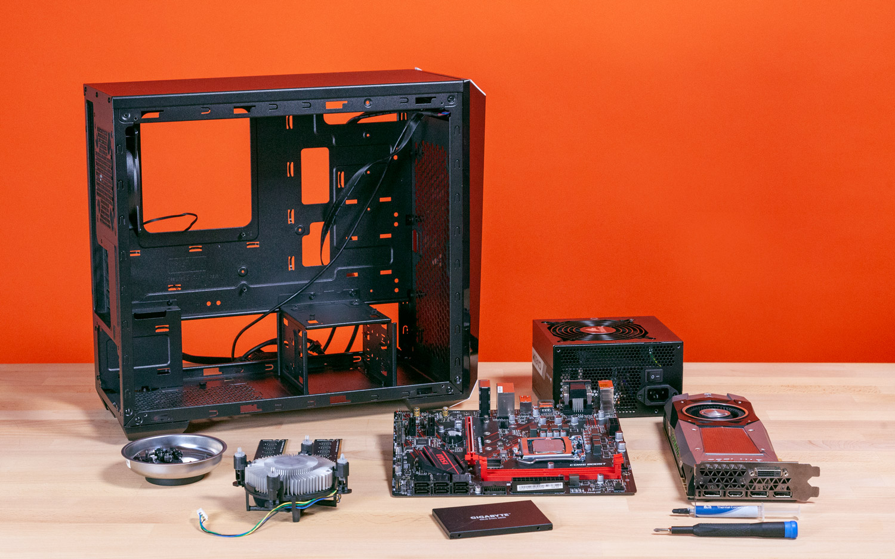

Panduan Cara Merakit PC
Langkah demi langkah membangun komputer impian Anda sendiri.

Sumber: jabarekspres.com
Persiapan Sebelum Merakit
Merakit PC sendiri memberikan kepuasan tersendiri dan memungkinkan Anda memilih komponen sesuai kebutuhan. Sebelum memulai, pastikan Anda berada di lingkungan yang bebas debu dan menggunakan alas yang tidak menghantarkan listrik statis. Siapkan peralatan dasar seperti obeng kembang (plus) dan pastikan semua komponen telah lengkap.
Langkah-Langkah Utama Merakit PC
Ikuti urutan umum berikut untuk memastikan perakitan berjalan lancar:
- Memasang Processor: Pasang CPU ke socket Motherboard dengan hati-hati. Pastikan tanda segitiga di pojok CPU sejajar dengan tanda di socket.
- Memasang RAM: Masukkan modul memori ke slot RAM hingga terdengar bunyi klik.
- Memasang Storage (SSD/M.2): Pasang penyimpanan pada slot yang tersedia sebelum motherboard masuk ke dalam casing.
- Memasang Motherboard ke Casing: Letakkan motherboard di dalam casing dan kencangkan bautnya sesuai posisi penyangga (standoff).
- Memasang Power Supply (PSU): Tempatkan PSU di kompartemennya dan hubungkan kabel daya utama ke motherboard.
- Manajemen Kabel: Atur kabel-kabel agar rapi dan tidak menghambat aliran udara di dalam casing.
Pengecekan Akhir dan Booting
Setelah semua komponen terpasang dan kabel terhubung (termasuk kabel panel depan untuk tombol power), hubungkan monitor ke kartu grafis atau motherboard. Tekan tombol power untuk melakukan POST (Power-On Self-Test). Jika muncul tampilan BIOS di layar, selamat! PC Anda telah berhasil dirakit secara fisik.
Mengapa Merakit Sendiri Lebih Baik?
Selain lebih ekonomis, merakit sendiri memudahkan Anda dalam melakukan upgrade di masa depan. Anda juga lebih memahami fungsi setiap komponen di dalam komputer Anda, sehingga lebih mudah saat melakukan pemecahan masalah (troubleshooting) jika terjadi kendala teknis nantinya.